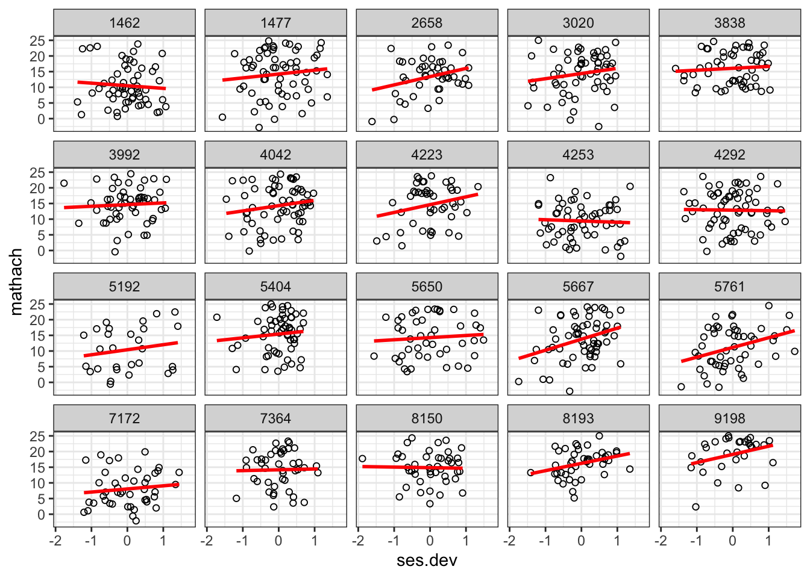
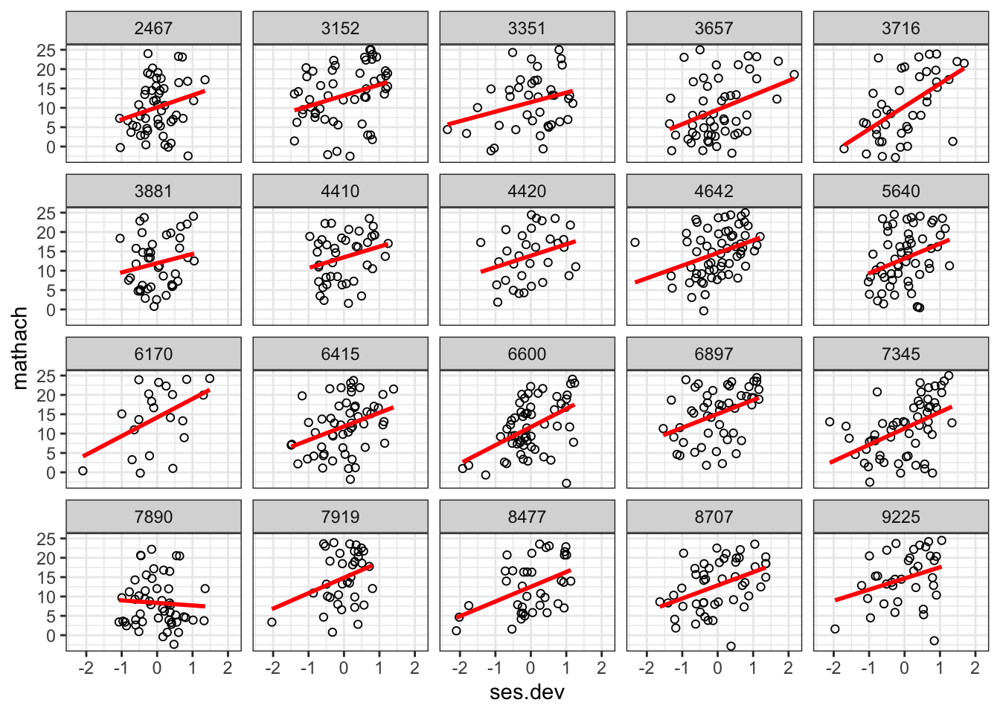
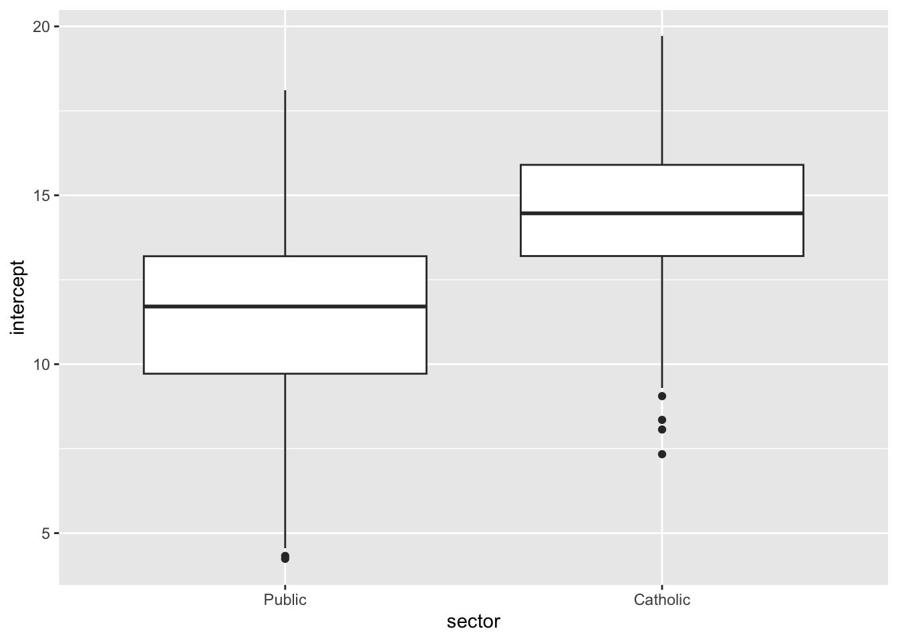
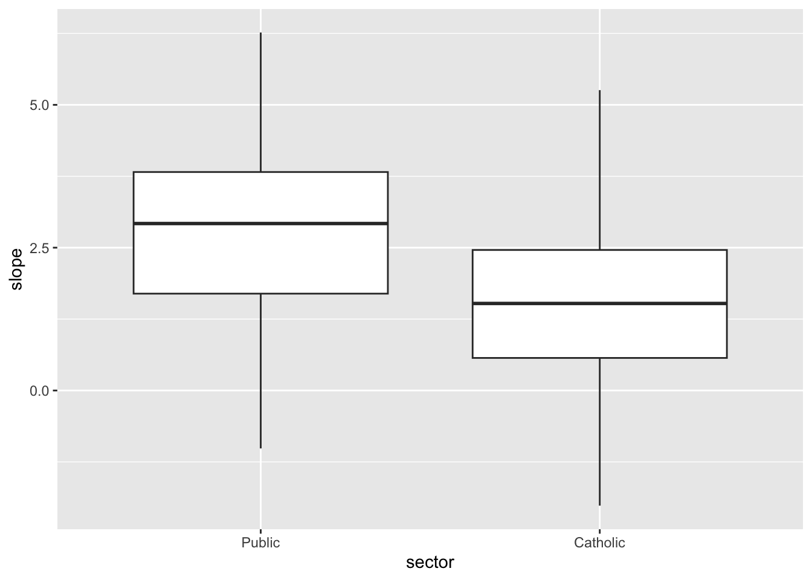
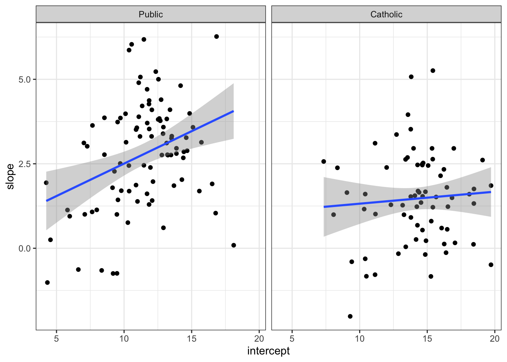
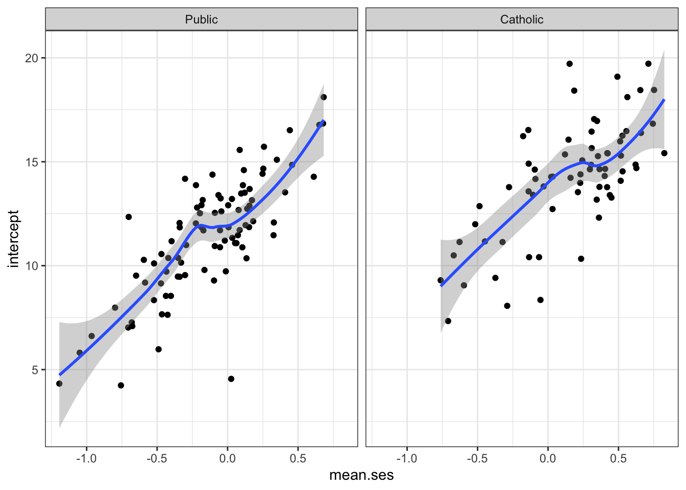
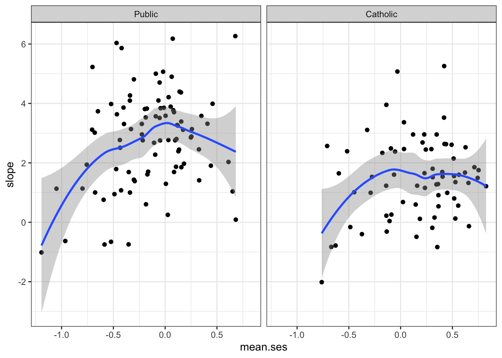
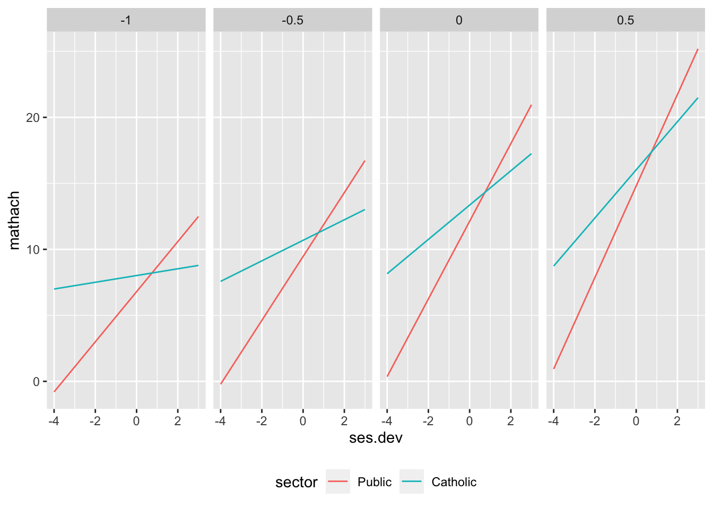
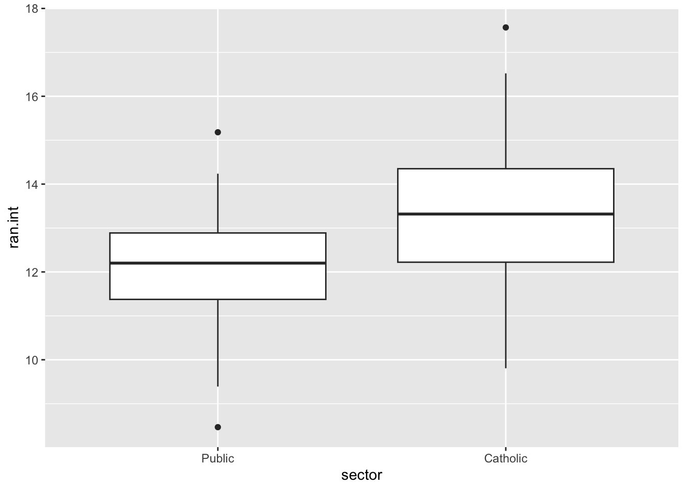
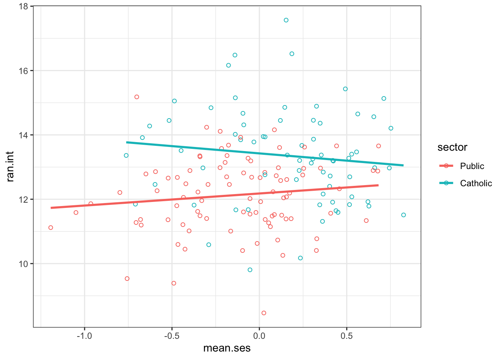

load("multilevel_data.rda")Introductie op multilevel analyse in R met lme4 en tidyverse
Introductie
Ik had al een tijdje geen multilevel-analyses meer gedaan en wilde dat weer eens doen met aangepaste technieken. Ben zelf ‘opgeleid’ met het prachtige werk van de multilevelgroep uit Bristol (Goldstein, Rabash, Brown e.a.) en ook dat van Joop Hox, die ik op dit gebied van dichtbij heb meegemaakt. Toen ik wat rondkeek, kwam ik de blog van Rafaella Vacca (Universiteit van Milaan) tegen, die ik inzichtelijk en vernieuwend vond. Hij werkt met het pakket lme4 en tidyverse. Hieronder vind je mijn bewerkte versie. Dank je wel Rafaella.
Laten we beginnen: * Dit is een introductie op multilevel analyse met R voor de seminars die Raffaele Vacca eerder gaf op de UniMi NASP graduate school en Behave Lab. * Hier staat het materiaal dat je via (GitHub) kunt downloaden.
R pakketten en literatuur:
- Deze tutorial richt zich op (1) het
lme4pakket voor (Restricted) Maximum Likelihood Estimation van lineaire multilevel modellen (Bates et al. 2015; Bates 2012) en (2) integreren vanlme4mettidyverse, een verzameling van R pakketten voor data wetenschap (waaronderdplyr,ggplot2, enpurrr) met een gezamenlijke taal en een set van principles (Wickham and Grolemund 2017). - Het is gebaseerd op de discussie ‘(linear) multilevel modeling’ van Fox and Weisberg (2018) en Fox (2016b). Het voorbeeld dat hier gebruikt wordt komt oorspronkelijk van Raudenbush and Bryk (2002). Een deel van de code is ook geïnsprieerd door Wickham and Grolemund’s (2017) behandeling van statististisch modeleren met R (vooral Hfd. 20).
- De data komen van
MathAchieveenMathAchSchooldata-frames in hetnlmepakket. Daar komen ze weer via het “High School and Beyond” onderzoek met 7185 studenten in 160 V.S. middelbare scholen, inclusief 70 Katholieke en 90 Openbare scholen (Fox 2016b; Raudenbush and Bryk 2002). Kijk naar de links en referenties hierboven als je meer documentatie zoekt voor deze data.
Nog wat litertuur en bronnen:
- Voor statistische theorie, details over schattingmethodes en, meer gedetailleerd, behandeling van multilevel modelellen die in deze introductie worden behandeld (in chronologische volgorde): Raudenbush and Bryk (2002); Gelman and Hill (2006); Rasbash, Steele, and Reckie (2008); Goldstein (2010); Snijders and Bosker (2012); Simonoff, Scott, and Marx (2013); Fox (2016a) (Ch. 23-24).
- Voor meer informatie over de R-implementatie van multilevel modellen, inclusief verschillende pakketten en schattingsmethodes: Finch, Bolin, and Kelley (2014); Fox and Weisberg (2018); Ben Bolker‘s FAQ page over ’Generalized Linear Mixed Models’.
Set-up instructies
Voor deze workshop is het nodig dat je:
- Dat je de laatste versie binnenhaalt van R hier (selecteer een locatie bij je in de buurt).
- Volg de instructies om R op jouw computer te installeren.
- Download RStudio (vrije versie) hier.
- Volg de instructies om RStudio op jouw computer te installeren.
- Installeer de R pakkettem genoemd onder.
- Open RStudio en ga naar
Top menu > Tools > Install packages.... - Installeer elk pakket van de lijst.
- Open RStudio en ga naar
- Breng de laptop mee naar de workshop.
- Download de workshop project folder hier
- Klik op de link > Klik op de groene
Cloneknop > Download ZIP > Dan ‘unzip’ de folder op jouw computer. - Ga naar de workshop project folder en dubbelklik op de workshop R project file (
Multilevel_with_R.Rproj). Dit zal RStudio openen.
- Klik op de link > Klik op de groene
Vereiste R pakketten
- Algemeen:
- Om multilevel modellen te draaien en de resultaten te zien:
broom.mixed.
carvoor testen van significantie.
ggeffectsom de geschatte waarden (‘predicted values’) te berekenen en te visualiseren.
lme4voor specificeren en schatten van multilevel modellen.
lmerTestvoor testen van significatie van multilevel modellen.
Exploreren en voorbereiden van data
- Importeren en bekijken van de data in R.
- Verkrijgen van basis informatie over de multilevel structuur van de data.
- Onze afhankelijke variabele is de student’s score op wiskunde toets (‘math assessment’ (
mathach). - Onafhankelijke variabelen:
- Student karakteristieken: score op sociaal-economische status (SES), in afwijking van het school SES gemiddelde (
ses.dev). - School karakteristieken: gemiddelde van de school-SES (
mean.ses) en de school type/sector (Public vs Catholic,sector).
- Student karakteristieken: score op sociaal-economische status (SES), in afwijking van het school SES gemiddelde (
Pakketten actief maken (zie code, niet in dit bestand zichtbaar).
Vervolgens de data laden.
Laten we de data eens bekijken.
stud_data# A tibble: 7,185 × 5
school minority sex ses mathach
<chr> <fct> <fct> <dbl> <dbl>
1 1224 No Female -1.53 5.88
2 1224 No Female -0.588 19.7
3 1224 No Male -0.528 20.3
4 1224 No Male -0.668 8.78
5 1224 No Male -0.158 17.9
6 1224 No Male 0.022 4.58
7 1224 No Female -0.618 -2.83
8 1224 No Male -0.998 0.523
9 1224 No Female -0.888 1.53
10 1224 No Male -0.458 21.5
# … with 7,175 more rowsschool_data# A tibble: 160 × 2
school sector
* <chr> <fct>
1 1224 Public
2 1288 Public
3 1296 Public
4 1308 Catholic
5 1317 Catholic
6 1358 Public
7 1374 Public
8 1433 Catholic
9 1436 Catholic
10 1461 Public
# … with 150 more rowsHoeveel scholen zitten erin?
stud_data %>%
pull(school) %>%
n_distinct[1] 160Hoeveel studenten zitten er op iedere school (school-omvang)?
stud_data %>%
count(school)# A tibble: 160 × 2
school n
<chr> <int>
1 1224 47
2 1288 25
3 1296 48
4 1308 20
5 1317 48
6 1358 30
7 1374 28
8 1433 35
9 1436 44
10 1461 33
# … with 150 more rowsSorteer het op school-omvang
stud_data %>%
count(school, sort = TRUE)# A tibble: 160 × 2
school n
<chr> <int>
1 2305 67
2 5619 66
3 4292 65
4 3610 64
5 4042 64
6 8857 64
7 4530 63
8 1477 62
9 2277 61
10 4642 61
# … with 150 more rowsWat is de gemiddelde school-omvang?
stud_data %>%
count(school) %>%
summarise(mean(n))# A tibble: 1 × 1
`mean(n)`
<dbl>
1 44.9Bereken het gemiddelde student-SES op elke school
stud_data %<>% # Gebruik marittr %<>% operator: pipe + bereken
group_by(school) %>% # Groepeer data frame per school voor mutate
mutate(mean.ses= mean(ses)) %>% # Creeer mean(ses) per school
ungroup # Ungroup data frame
stud_data# A tibble: 7,185 × 6
school minority sex ses mathach mean.ses
<chr> <fct> <fct> <dbl> <dbl> <dbl>
1 1224 No Female -1.53 5.88 -0.434
2 1224 No Female -0.588 19.7 -0.434
3 1224 No Male -0.528 20.3 -0.434
4 1224 No Male -0.668 8.78 -0.434
5 1224 No Male -0.158 17.9 -0.434
6 1224 No Male 0.022 4.58 -0.434
7 1224 No Female -0.618 -2.83 -0.434
8 1224 No Male -0.998 0.523 -0.434
9 1224 No Female -0.888 1.53 -0.434
10 1224 No Male -0.458 21.5 -0.434
# … with 7,175 more rowsLaat de student’s SES-afwijking van het school-gemiddelde zien.
(stud_data %<>%
mutate(ses.dev = ses - mean.ses))# A tibble: 7,185 × 7
school minority sex ses mathach mean.ses ses.dev
<chr> <fct> <fct> <dbl> <dbl> <dbl> <dbl>
1 1224 No Female -1.53 5.88 -0.434 -1.09
2 1224 No Female -0.588 19.7 -0.434 -0.154
3 1224 No Male -0.528 20.3 -0.434 -0.0936
4 1224 No Male -0.668 8.78 -0.434 -0.234
5 1224 No Male -0.158 17.9 -0.434 0.276
6 1224 No Male 0.022 4.58 -0.434 0.456
7 1224 No Female -0.618 -2.83 -0.434 -0.184
8 1224 No Male -0.998 0.523 -0.434 -0.564
9 1224 No Female -0.888 1.53 -0.434 -0.454
10 1224 No Male -0.458 21.5 -0.434 -0.0236
# … with 7,175 more rowsLaten we de twee datasets combineren.
df <- left_join(stud_data, school_data, by="school")
df# A tibble: 7,185 × 8
school minority sex ses mathach mean.ses ses.dev sector
<chr> <fct> <fct> <dbl> <dbl> <dbl> <dbl> <fct>
1 1224 No Female -1.53 5.88 -0.434 -1.09 Public
2 1224 No Female -0.588 19.7 -0.434 -0.154 Public
3 1224 No Male -0.528 20.3 -0.434 -0.0936 Public
4 1224 No Male -0.668 8.78 -0.434 -0.234 Public
5 1224 No Male -0.158 17.9 -0.434 0.276 Public
6 1224 No Male 0.022 4.58 -0.434 0.456 Public
7 1224 No Female -0.618 -2.83 -0.434 -0.184 Public
8 1224 No Male -0.998 0.523 -0.434 -0.564 Public
9 1224 No Female -0.888 1.53 -0.434 -0.454 Public
10 1224 No Male -0.458 21.5 -0.434 -0.0236 Public
# … with 7,175 more rowsMaak van de variabele school een factor (een categoriale variabele zeg maar) en vergelijk N-scholen van school_data en N-studenten van df met elkaar.
df %<>%
mutate(school = factor(school))# Frequenties van school sector:
# N scholen
school_data %>%
count(sector)# A tibble: 2 × 2
sector n
<fct> <int>
1 Public 90
2 Catholic 70# N studenten
df %>%
count(sector)# A tibble: 2 × 2
sector n
<fct> <int>
1 Public 3642
2 Catholic 3543Dus, zo konden we antwoorden vinden op vragen als: * Hoeveel studenten en scholen zitten er in de data? * Wat is gemiddelde aantal studenten per school? * Hoeveel zijn er Katholiek, hoeveel openbaar?
Analyses per school: scatter-plots
Nu we een algemeen beeld hebben van de dataset, gaan we vervolgens kijken wat we over individuele scholen kunnen zeggen.
Wat je nu moet doen: * Maak een kleine dataset van een random sample van 20 Katholieke scholen en 20 Openbare scholen. * Maak een scatter-plot van de student wiskunde score per student_SES in elke school, voor de subsample Katholieke en Openbare scholen.
Eerst een sample van katholieke scholen.
set.seed(1129)
school.IDs <- school_data %>%
filter(sector=="Catholic") %>%
sample_n(20) %>%
pull(school)
school.IDs [1] "5667" "4223" "9198" "4253" "5650" "8150" "5761" "2658" "3838" "8193"
[11] "4292" "7364" "3992" "5404" "5192" "1462" "4042" "3020" "7172" "1477"# Filter data op juist deze school IDs
(df.cat <- df %>%
filter(school %in% school.IDs))# A tibble: 1,011 × 8
school minority sex ses mathach mean.ses ses.dev sector
<fct> <fct> <fct> <dbl> <dbl> <dbl> <dbl> <fct>
1 1462 Yes Male 0.162 1.97 -0.669 0.831 Catholic
2 1462 Yes Male -0.758 7.72 -0.669 -0.0886 Catholic
3 1462 Yes Male -0.708 19.0 -0.669 -0.0386 Catholic
4 1462 Yes Male -0.818 20.1 -0.669 -0.149 Catholic
5 1462 Yes Male -1.92 22.3 -0.669 -1.25 Catholic
6 1462 Yes Male -0.948 14.3 -0.669 -0.279 Catholic
7 1462 Yes Male -0.798 10.2 -0.669 -0.129 Catholic
8 1462 Yes Male -1.46 9.61 -0.669 -0.789 Catholic
9 1462 Yes Male -0.158 6.12 -0.669 0.511 Catholic
10 1462 Yes Male -0.378 23.8 -0.669 0.291 Catholic
# … with 1,001 more rowsWe kunnen alles in een enkele pipe zetten om een korere code te hebben.
set.seed(1129)
df.cat <- school_data %>%
filter(sector=="Catholic") %>%
sample_n(20) %>%
pull(school) %>%
{filter(df, school %in% .)} # Let op {} haakjes zodat "." niet als eerste argument in de filter() wordt gebruikt
# Doe hetzelfde voor de Openbare scholen
set.seed(1129)
df.pub <- school_data %>%
filter(sector=="Public") %>%
sample_n(20) %>%
pull(school) %>%
{filter(df, school %in% .)}Plot SES vs wisk score in elk van 20 Katholieke scholen
# Data en variabelen
p <- ggplot(df.cat, aes(x=ses.dev, y=mathach)) +
# Scatterplot geom
geom_point(shape=1) +
# voeg een lineaire regressioe lijn toe
geom_smooth(method="lm", color= "red", se=FALSE) +
# Facet per school
facet_wrap(~ school, nrow=4, ncol=5) +
# Zwart/wit thema
theme_bw()
# Bekijk de plot
p`geom_smooth()` using formula = 'y ~ x'
Zelfde als hierboven maar nu voor Openbare scholen
ggplot(df.pub, aes(x=ses.dev, y=mathach)) +
# Scatterplot geom
geom_point(shape=1) +
# rode lineaire regressie lijn
geom_smooth(method="lm", color= "red", se=FALSE) +
# Facet per school
facet_wrap(~ school, nrow=4, ncol=5) +
# Zwart/wit thema
theme_bw()`geom_smooth()` using formula = 'y ~ x'
- Wat valt je op over intercept en slope als je naar de plaatjes kijkt? Zijn ze constant over de scholen?
- Wat van soort relatie zie je in het algemeen tussen students-SES en z’n wiskundescore in de scholen? Verandert deze relatie tussen scholen?
- Is er verschil in variatie tussen de regressielijnen van de katholieke en openbare scholen?
Aparte analyses per school: lineaire regressies
Nu gaan we aparte analyses per school maken. Wat je moet doen: * Maak een geclusterd dataframe op schoolniveau (nested.df) met een rij van elke school inclusief het dataframe voor de leerlingen van die school.
* Gebruik nested.df en purrr::map om een afzonderlijk lineaire regressiemodel te schatten van wiskundeprestaties op SES in elke school.
* Zet de schattingsresultaten in nieuwe kolommen in het geneste dataframe.
* Visualiseer de schattingsresultaten:
- Verdeling van schattingen van intercept en helling per schoolsector (boxplots).
- Verdeling van schattingen van intercept en helling per schoolgemiddelde SES, per schoolsector (scatterplots).
Dus, schat een lineair model voor uitkomstvariabele mathach zoals voorspeld door ses.dev, apart voor elk van de 160 scholen.
# Allereerst, nest het studenten dataframe per school
nested.df <- df %>%
group_by(school) %>%
nest()
# Dit creeert een school-niveau dataframe (data rij = school), met in
# schoolrij een student niveau dataframe voor die school.
nested.df# A tibble: 160 × 2
# Groups: school [160]
school data
<fct> <list>
1 1224 <tibble [47 × 7]>
2 1288 <tibble [25 × 7]>
3 1296 <tibble [48 × 7]>
4 1308 <tibble [20 × 7]>
5 1317 <tibble [48 × 7]>
6 1358 <tibble [30 × 7]>
7 1374 <tibble [28 × 7]>
8 1433 <tibble [35 × 7]>
9 1436 <tibble [44 × 7]>
10 1461 <tibble [33 × 7]>
# … with 150 more rows# Wat zeggen van de rijen en kolommen, wat indiceren ze in elk school dataframe?
# (b.v. [47 x 7])
# De nested.df$data is een list van dataframes, een voor elke school
class(nested.df$data)[1] "list"length(nested.df$data)[1] 160# Bv, kijk eens naar de data van school 1224:
## Nog steeds genest
nested.df %>%
filter(school=="1224") %>%
dplyr::select(school, data)# A tibble: 1 × 2
# Groups: school [1]
school data
<fct> <list>
1 1224 <tibble [47 × 7]>## Niet genest
nested.df %>%
filter(school=="1224") %>%
dplyr::select(school, data) %>%
unnest(cols = c(data))# A tibble: 47 × 8
# Groups: school [1]
school minority sex ses mathach mean.ses ses.dev sector
<fct> <fct> <fct> <dbl> <dbl> <dbl> <dbl> <fct>
1 1224 No Female -1.53 5.88 -0.434 -1.09 Public
2 1224 No Female -0.588 19.7 -0.434 -0.154 Public
3 1224 No Male -0.528 20.3 -0.434 -0.0936 Public
4 1224 No Male -0.668 8.78 -0.434 -0.234 Public
5 1224 No Male -0.158 17.9 -0.434 0.276 Public
6 1224 No Male 0.022 4.58 -0.434 0.456 Public
7 1224 No Female -0.618 -2.83 -0.434 -0.184 Public
8 1224 No Male -0.998 0.523 -0.434 -0.564 Public
9 1224 No Female -0.888 1.53 -0.434 -0.454 Public
10 1224 No Male -0.458 21.5 -0.434 -0.0236 Public
# … with 37 more rows# Of kijk naar het eerste element van nested.df$data
nested.df$data[[1]]# A tibble: 47 × 7
minority sex ses mathach mean.ses ses.dev sector
<fct> <fct> <dbl> <dbl> <dbl> <dbl> <fct>
1 No Female -1.53 5.88 -0.434 -1.09 Public
2 No Female -0.588 19.7 -0.434 -0.154 Public
3 No Male -0.528 20.3 -0.434 -0.0936 Public
4 No Male -0.668 8.78 -0.434 -0.234 Public
5 No Male -0.158 17.9 -0.434 0.276 Public
6 No Male 0.022 4.58 -0.434 0.456 Public
7 No Female -0.618 -2.83 -0.434 -0.184 Public
8 No Male -0.998 0.523 -0.434 -0.564 Public
9 No Female -0.888 1.53 -0.434 -0.454 Public
10 No Male -0.458 21.5 -0.434 -0.0236 Public
# … with 37 more rows# Dat kan ook met tidyverse syntax
nested.df %>%
pull(data) %>%
extract2(1)# A tibble: 47 × 7
minority sex ses mathach mean.ses ses.dev sector
<fct> <fct> <dbl> <dbl> <dbl> <dbl> <fct>
1 No Female -1.53 5.88 -0.434 -1.09 Public
2 No Female -0.588 19.7 -0.434 -0.154 Public
3 No Male -0.528 20.3 -0.434 -0.0936 Public
4 No Male -0.668 8.78 -0.434 -0.234 Public
5 No Male -0.158 17.9 -0.434 0.276 Public
6 No Male 0.022 4.58 -0.434 0.456 Public
7 No Female -0.618 -2.83 -0.434 -0.184 Public
8 No Male -0.998 0.523 -0.434 -0.564 Public
9 No Female -0.888 1.53 -0.434 -0.454 Public
10 No Male -0.458 21.5 -0.434 -0.0236 Public
# … with 37 more rowsIn plaats van het geneste dataframe te gebruiken, kunnen we nu een aparte linaire regressiemodel fitten in elk dataframe van een school (elk element van nested.df$data).
lmodels <- nested.df %>%
# Krijg alle school dataframes
pull(data) %>%
# Run lm() voor elk via map
purrr::map(~ lm(mathach ~ ses.dev, data= .x))
# Let op voor de formule notatie in purrr::map(), waar elke .x een element indiceert van
# nested.df$data.
# lmodels is nu een list van gedraaide lineaire modellen, een voor elke school
head(lmodels)[[1]]
Call:
lm(formula = mathach ~ ses.dev, data = .x)
Coefficients:
(Intercept) ses.dev
9.715 2.509
[[2]]
Call:
lm(formula = mathach ~ ses.dev, data = .x)
Coefficients:
(Intercept) ses.dev
13.511 3.255
[[3]]
Call:
lm(formula = mathach ~ ses.dev, data = .x)
Coefficients:
(Intercept) ses.dev
7.636 1.076
[[4]]
Call:
lm(formula = mathach ~ ses.dev, data = .x)
Coefficients:
(Intercept) ses.dev
16.256 0.126
[[5]]
Call:
lm(formula = mathach ~ ses.dev, data = .x)
Coefficients:
(Intercept) ses.dev
13.178 1.274
[[6]]
Call:
lm(formula = mathach ~ ses.dev, data = .x)
Coefficients:
(Intercept) ses.dev
11.206 5.068 class(lmodels)[1] "list"length(lmodels)[1] 160In plaats van deze list als een apart object, kunnen we nu een nieuwe kolom maken in nested.df, elk model in een schoolrij van nested.df.
nested.df %<>%
mutate(model = purrr::map(data,
~ lm(mathach ~ ses.dev, data= .x)))
# Resultaat
nested.df# A tibble: 160 × 3
# Groups: school [160]
school data model
<fct> <list> <list>
1 1224 <tibble [47 × 7]> <lm>
2 1288 <tibble [25 × 7]> <lm>
3 1296 <tibble [48 × 7]> <lm>
4 1308 <tibble [20 × 7]> <lm>
5 1317 <tibble [48 × 7]> <lm>
6 1358 <tibble [30 × 7]> <lm>
7 1374 <tibble [28 × 7]> <lm>
8 1433 <tibble [35 × 7]> <lm>
9 1436 <tibble [44 × 7]> <lm>
10 1461 <tibble [33 × 7]> <lm>
# … with 150 more rowsDe derde kolom van nested.df ($model) omvat het gedraaide lineaire model voor elke school (oftewel elke rij).
# B.v., model voor school 1224
nested.df %>%
filter(school=="1224") %>%
pull(model) %>%
extract2(1)
Call:
lm(formula = mathach ~ ses.dev, data = .x)
Coefficients:
(Intercept) ses.dev
9.715 2.509 Of het intercept en de slope voor het lineair regressiemodel van school 1224.
nested.df %>%
filter(school=="1224") %>%
pull(model) %>%
# Dit is nodig om het lm object te krijgen uit het listobject
extract2(1) %>%
coef(Intercept) ses.dev
9.715447 2.508582 Of, met een tidy-output.
nested.df %>%
filter(school=="1224") %>%
pull(model) %>%
extract2(1) %>%
broom::tidy()# A tibble: 2 × 5
term estimate std.error statistic p.value
<chr> <dbl> <dbl> <dbl> <dbl>
1 (Intercept) 9.72 1.10 8.87 1.94e-11
2 ses.dev 2.51 1.77 1.42 1.62e- 1Laten we nu dezelfde code gebruiken via ‘mutate’ om opgeschoonde resultaten voor alle modellen (alle scholen) te krijgen
nested.df %<>%
mutate(model.results = purrr::map(model,
broom::tidy)
)
nested.df# A tibble: 160 × 4
# Groups: school [160]
school data model model.results
<fct> <list> <list> <list>
1 1224 <tibble [47 × 7]> <lm> <tibble [2 × 5]>
2 1288 <tibble [25 × 7]> <lm> <tibble [2 × 5]>
3 1296 <tibble [48 × 7]> <lm> <tibble [2 × 5]>
4 1308 <tibble [20 × 7]> <lm> <tibble [2 × 5]>
5 1317 <tibble [48 × 7]> <lm> <tibble [2 × 5]>
6 1358 <tibble [30 × 7]> <lm> <tibble [2 × 5]>
7 1374 <tibble [28 × 7]> <lm> <tibble [2 × 5]>
8 1433 <tibble [35 × 7]> <lm> <tibble [2 × 5]>
9 1436 <tibble [44 × 7]> <lm> <tibble [2 × 5]>
10 1461 <tibble [33 × 7]> <lm> <tibble [2 × 5]>
# … with 150 more rowsGebruik het commando unnest om de resultaten te zien.
nested.df %>%
unnest(model.results)# A tibble: 320 × 8
# Groups: school [160]
school data model term estimate std.e…¹ stati…² p.value
<fct> <list> <list> <chr> <dbl> <dbl> <dbl> <dbl>
1 1224 <tibble [47 × 7]> <lm> (Intercept) 9.72 1.10 8.87 1.94e-11
2 1224 <tibble [47 × 7]> <lm> ses.dev 2.51 1.77 1.42 1.62e- 1
3 1288 <tibble [25 × 7]> <lm> (Intercept) 13.5 1.36 9.91 9.12e-10
4 1288 <tibble [25 × 7]> <lm> ses.dev 3.26 2.08 1.57 1.31e- 1
5 1296 <tibble [48 × 7]> <lm> (Intercept) 7.64 0.774 9.86 6.27e-13
6 1296 <tibble [48 × 7]> <lm> ses.dev 1.08 1.21 0.890 3.78e- 1
7 1308 <tibble [20 × 7]> <lm> (Intercept) 16.3 1.40 11.6 9.02e-10
8 1308 <tibble [20 × 7]> <lm> ses.dev 0.126 3.00 0.0420 9.67e- 1
9 1317 <tibble [48 × 7]> <lm> (Intercept) 13.2 0.790 16.7 3.97e-21
10 1317 <tibble [48 × 7]> <lm> ses.dev 1.27 1.44 0.887 3.80e- 1
# … with 310 more rows, and abbreviated variable names ¹std.error, ²statisticLaten we dat deel vasthouden waarin we geïnteresseerd zijn.
lm.coeff <- nested.df %>%
unnest(model.results) %>%
dplyr::select(school, term, estimate)
lm.coeff# A tibble: 320 × 3
# Groups: school [160]
school term estimate
<fct> <chr> <dbl>
1 1224 (Intercept) 9.72
2 1224 ses.dev 2.51
3 1288 (Intercept) 13.5
4 1288 ses.dev 3.26
5 1296 (Intercept) 7.64
6 1296 ses.dev 1.08
7 1308 (Intercept) 16.3
8 1308 ses.dev 0.126
9 1317 (Intercept) 13.2
10 1317 ses.dev 1.27
# … with 310 more rowsReshape het (maak er een wijd databestand van) en geef het een andere naam.
lm.coeff %<>%
# Model intercept en slope in twee kolommen
pivot_wider(names_from = term, values_from = estimate) %>%
# Geef de kolommen een andere naam
dplyr::select(school, intercept = `(Intercept)`, slope = ses.dev)
lm.coeff# A tibble: 160 × 3
# Groups: school [160]
school intercept slope
<fct> <dbl> <dbl>
1 1224 9.72 2.51
2 1288 13.5 3.26
3 1296 7.64 1.08
4 1308 16.3 0.126
5 1317 13.2 1.27
6 1358 11.2 5.07
7 1374 9.73 3.85
8 1433 19.7 1.85
9 1436 18.1 1.60
10 1461 16.8 6.27
# … with 150 more rowsVoeg variabelen sector (openbaar, katholiek) en mean.ses (gemiddelde ses) toe aan dit dataframe.
# Creeer dataframe met school ID, schoolsector, mean.ses
lm.df <- df %>%
dplyr::select(school, sector, mean.ses) %>%
distinct
lm.df# A tibble: 160 × 3
school sector mean.ses
<fct> <fct> <dbl>
1 1224 Public -0.434
2 1288 Public 0.122
3 1296 Public -0.426
4 1308 Catholic 0.528
5 1317 Catholic 0.345
6 1358 Public -0.0197
7 1374 Public -0.0126
8 1433 Catholic 0.712
9 1436 Catholic 0.563
10 1461 Public 0.677
# … with 150 more rowsCombineer dit lm.def-bestand met het bestand lm.coeff.
(lm.df %<>%
left_join(lm.coeff, by="school")
)# A tibble: 160 × 5
school sector mean.ses intercept slope
<fct> <fct> <dbl> <dbl> <dbl>
1 1224 Public -0.434 9.72 2.51
2 1288 Public 0.122 13.5 3.26
3 1296 Public -0.426 7.64 1.08
4 1308 Catholic 0.528 16.3 0.126
5 1317 Catholic 0.345 13.2 1.27
6 1358 Public -0.0197 11.2 5.07
7 1374 Public -0.0126 9.73 3.85
8 1433 Catholic 0.712 19.7 1.85
9 1436 Catholic 0.563 18.1 1.60
10 1461 Public 0.677 16.8 6.27
# … with 150 more rowsNu kunnen we een boxplot maken van schoolintercepts per schoolsector,
ggplot(lm.df, aes(x= sector, y= intercept)) + geom_boxplot()
En ook een boxplot van de slopes van school_SES per schoolsector
ggplot(lm.df, aes(x= sector, y= slope)) + geom_boxplot()
Of beide schattingen in een scatterplot per schoolsector.
ggplot(lm.df, aes(x= intercept, y= slope)) +
# Scatterplot
geom_point() +
# Lineaire regressielijn
geom_smooth(method="lm") +
# Facet per sector
facet_wrap(~ sector) +
theme_bw()`geom_smooth()` using formula = 'y ~ x'
Scatterplots van intercepts voor school mean.ses per sector.
ggplot(lm.df, aes(x= mean.ses, y= intercept)) +
geom_point() +
geom_smooth(method="loess") +
facet_wrap(~ sector) +
theme_bw()`geom_smooth()` using formula = 'y ~ x'
Scatterplot van slopes van school mean.ses per sector
ggplot(lm.df, aes(x= mean.ses, y= slope)) +
geom_point() +
geom_smooth(method="loess") +
facet_wrap(~ sector) +
theme_bw()`geom_smooth()` using formula = 'y ~ x'
Nu kun je op volgende vragen antwoord geven. * In nested.df$data, wat geven de aantallen rijen en kolommen aan in het dataframe van elke school?.
* Welke verschillen zie je tussen de verdeling van de geschatte intercepts in Openbare vs Katholieke scholen? Wat betekent dit inhoudelijk?.
* Welke verschillen zie je tussen de verdeling van de geschatte slopes in openbare vs. katholieke scholen? Hoe interpreteer je dit inhoudelijk?.
* Welke relatie komt naar voren tussen de gemiddelde SES van de school en de geschatte intercept van de school? Hoe zit het met dezelfde relatie voor de geschatte helling van de school? Zijn er in dit opzicht verschillen tussen openbare en katholieke scholen?
Hierarchische Lineair Model: variantie componenten
Nu we databestand snappen, en ook zicht hebben op de regressies op schoolniveau en over scholen heen, gaan we over naar multilevel modeleren (een techniek die hier beter zicht op geeft) en we zullen het volgende doen: * Schat een multilevelmodel op twee niveaus met leerlingen (niveau 1) genest in scholen (niveau 2): mod1.
- Dit is een multilevel-model zonder voorspeller, dat eenvoudig matchach variatie verdeelt tussen variatie op leerlingniveau (tussen leerlingen) en variatie op schoolniveau (tussen scholen).
- Hier wordt mathach gemodelleerd als resultaat van een willekeurig effect van de school (groepsniveau) plus een willekeurig effect van de leerling (individueel of restniveau): deze worden respectievelijk \(u_i\) en \(e_i\) genoemd door (Rasbash, Steele, and Reckie 2008).
- Net als alle modellen in deze inleiding wordt mod1 geschat via Restricted Maximum Likelihood (REML).
* Voer een Likelihood Ratio Test (LRT) uit voor de significantie van schooleffecten, waarbij mod1 wordt vergeleken met hetzelfde nul lineaire model (geen voorspeller) zonder rekening te houden met clustering van leerlingen in scholen (d.w.z. een single-level model).
* Kijk ook naar de schattingen voor de variantiecomponenten of random-effectparameters: de variantie op leerlingniveau en de variantie op schoolniveau - respectievelijk \(\sigma^2_e\) en \(\sigma^2_u\) genoemd door Rasbash, Steele, and Reckie (2008).
* Gebruik schattingen voor \(\sigma^2_e\) en \(\sigma^2_u\) om de variantieverdelingscoëfficiënt (VPC) te berekenen:)
- Dit is het deel van de mathach variatie dat toe te schrijven is aan het tweede niveau, dat wil zeggen toe te schrijven aan de verschillen tussen scholen.
- Merk op dat in variantiecomponentenmodellen en random-interceptmodellen (maar niet in random slopemodellen) de VPC hetzelfde is als de Intraclass Correlatiecoëfficiënt (de correlatie tussen mathach van twee willekeurige leerlingen van dezelfde school).
e beginnen met een simpel variantie componenten model
mod1 <- lmer(mathach ~ 1 + (1 | school),
data=df)
# Model 1 is geschat met 'Restricted Maximum Likelihood' (REML) als standaard.
# Je kunt REML=FALSE instellen om ipv Maximum Likelihood (ML) te gebruiken.
# Hier is het resultaat.
summary(mod1)Linear mixed model fit by REML. t-tests use Satterthwaite's method [
lmerModLmerTest]
Formula: mathach ~ 1 + (1 | school)
Data: df
REML criterion at convergence: 47116.8
Scaled residuals:
Min 1Q Median 3Q Max
-3.0631 -0.7539 0.0267 0.7606 2.7426
Random effects:
Groups Name Variance Std.Dev.
school (Intercept) 8.614 2.935
Residual 39.148 6.257
Number of obs: 7185, groups: school, 160
Fixed effects:
Estimate Std. Error df t value Pr(>|t|)
(Intercept) 12.6370 0.2444 156.6473 51.71 <2e-16 ***
---
Signif. codes: 0 '***' 0.001 '**' 0.01 '*' 0.05 '.' 0.1 ' ' 1Laten we de resultaten in tidy-formaat afdrukken.
(mod1.res <- tidy(mod1))# A tibble: 3 × 8
effect group term estimate std.error statis…¹ df p.value
<chr> <chr> <chr> <dbl> <dbl> <dbl> <dbl> <dbl>
1 fixed <NA> (Intercept) 12.6 0.244 51.7 157. 2.34e-100
2 ran_pars school sd__(Intercept) 2.93 NA NA NA NA
3 ran_pars Residual sd__Observation 6.26 NA NA NA NA
# … with abbreviated variable name ¹statisticOm significantie van schooleffecten te meten, laten we in ieder geval eens een nul-model (zonder invloed van de school) schatten om vervolgens het multilevel-model met het nulmodel te kunnen vergelijken.
mod1_sl <- lm(mathach ~ 1,
data=df)
# Vergelijk de twee modellen met Likelihood Ratio Test (LRT).
anova(mod1, mod1_sl) refitting model(s) with ML (instead of REML)Data: df
Models:
mod1_sl: mathach ~ 1
mod1: mathach ~ 1 + (1 | school)
npar AIC BIC logLik deviance Chisq Df Pr(>Chisq)
mod1_sl 2 48104 48117 -24050 48100
mod1 3 47122 47142 -23558 47116 983.92 1 < 2.2e-16 ***
---
Signif. codes: 0 '***' 0.001 '**' 0.01 '*' 0.05 '.' 0.1 ' ' 1Wat is de variantie van schoolniveau?
(sigma2_u <- mod1.res %>%
filter(effect == "ran_pars", group == "school") %>%
# Standaard deviatie
pull(estimate) %>%
# ^2 = Variantie
.^2)[1] 8.614025Wat is de variantie van het individuele niveau?
(sigma2_e <- mod1.res %>%
filter(effect == "ran_pars", group == "Residual") %>%
# Standaard deviatie
pull(estimate) %>%
# ^2 = Variantie
.^2)[1] 39.14832Wat is nu het percentage dat toe te schrijven is aan de school (VPC oftewel ICC)?
sigma2_u/(sigma2_u + sigma2_e)[1] 0.1803518Op de volgende vragen kunnen nu antwoorden worden gegeven: * Hoe kunnen we de resultaten van het variantiecomponentenmodel interpreteren?
* Wat is het aandeel van de wiskunde variatie dat verklaard wordt door het schoolniveau? Hoe verhoudt dit zich tot de correlatie tussen wiskundescores van twee willekeurige leerlingen op dezelfde school?
* Zijn schooleffecten volgens de LRT significant, dat wil zeggen, is het schoolniveau een significante bron van variatie in mathach?
Hierarchisch Lineair Model: random intercept
Het volgende gaan we doen: * Schat mod2, een random intercept model met ‘fixed slope’ voor individuele student_SES. * Maak schattingen voor vaste effecten (Intercept en ses.dev slope) en voor random-effect parameters. * Dit model is hetzelfde als vorig variantie componenten model, behalve dat mathach nu voor een deel verklaard wordt door individuele student_SES (ses.dev), en het onderverklaarde variantie deel tussen individuele en school random effecten. - De VPC neemt iets toe vergeleken met mod1, dat geeft aan dat een relatief hoger deel van de (onverklaarde) mathach variatie nu verklaard wordt door school: met andere woorden, student_SES snoept een deel van student-niveau variatie dat het vorige mod1 toeschreef aan individuele random effecten (\(e_i\)). * Er is een serieus debat over en hoe p-waarden te berekenen (en rapporteren) in multilevel modellen: * Zie Ben Bolker’s GLMM FAQ discussie van dit onderwerp, en van testen van significantie voor multilevel modellen in het algemeen. * Wij gebruiken lmerTest, de summary functie.
Eerst een random intercept-model met vaste slope met toegevoegde individuele variabele ses.dev (student_SES).
mod2 <- lmer(mathach ~ 1 + ses.dev + (1 | school),
data=df)
# Zie resultaten.
summary(mod2)Linear mixed model fit by REML. t-tests use Satterthwaite's method [
lmerModLmerTest]
Formula: mathach ~ 1 + ses.dev + (1 | school)
Data: df
REML criterion at convergence: 46724
Scaled residuals:
Min 1Q Median 3Q Max
-3.0969 -0.7322 0.0194 0.7572 2.9147
Random effects:
Groups Name Variance Std.Dev.
school (Intercept) 8.672 2.945
Residual 37.010 6.084
Number of obs: 7185, groups: school, 160
Fixed effects:
Estimate Std. Error df t value Pr(>|t|)
(Intercept) 12.6361 0.2445 156.7405 51.68 <2e-16 ***
ses.dev 2.1912 0.1087 7022.0237 20.17 <2e-16 ***
---
Signif. codes: 0 '***' 0.001 '**' 0.01 '*' 0.05 '.' 0.1 ' ' 1
Correlation of Fixed Effects:
(Intr)
ses.dev 0.000 Een andere optie om significantie te testen van single coefficient schattingen.
Anova(mod2)Analysis of Deviance Table (Type II Wald chisquare tests)
Response: mathach
Chisq Df Pr(>Chisq)
ses.dev 406.68 1 < 2.2e-16 ***
---
Signif. codes: 0 '***' 0.001 '**' 0.01 '*' 0.05 '.' 0.1 ' ' 1We kunnen ook de resultaten in tidy-vorm presenteren.
(mod2.res <- tidy(mod2))# A tibble: 4 × 8
effect group term estimate std.error statis…¹ df p.value
<chr> <chr> <chr> <dbl> <dbl> <dbl> <dbl> <dbl>
1 fixed <NA> (Intercept) 12.6 0.244 51.7 157. 2.29e-100
2 fixed <NA> ses.dev 2.19 0.109 20.2 7022. 5.77e- 88
3 ran_pars school sd__(Intercept) 2.94 NA NA NA NA
4 ran_pars Residual sd__Observation 6.08 NA NA NA NA
# … with abbreviated variable name ¹statisticWe kunnen de fixed-effects (vaste effecten) laten zien (voor intercept en SES).
# Zie schattingen estimates voor populatie-niveau fixed effecten: intercept en SES
mod2.res %>%
filter(effect == "fixed")# A tibble: 2 × 8
effect group term estimate std.error statistic df p.value
<chr> <chr> <chr> <dbl> <dbl> <dbl> <dbl> <dbl>
1 fixed <NA> (Intercept) 12.6 0.244 51.7 157. 2.29e-100
2 fixed <NA> ses.dev 2.19 0.109 20.2 7022. 5.77e- 88We kunnen ook de random-effects (op school en individueel niveau) presenteren.
mod2.res %>%
filter(effect == "ran_pars")# A tibble: 2 × 8
effect group term estimate std.error statistic df p.value
<chr> <chr> <chr> <dbl> <dbl> <dbl> <dbl> <dbl>
1 ran_pars school sd__(Intercept) 2.94 NA NA NA NA
2 ran_pars Residual sd__Observation 6.08 NA NA NA NADit is schatting van school-niveau variantie.
(sigma2_u <- mod2.res %>%
filter(effect == "ran_pars", group == "school") %>%
# Standaard deviatie
pull(estimate) %>%
# ^2 = Variantie
.^2)[1] 8.672289Dit is schatting van variantie op individueel niveau.
(sigma2_e <- mod2.res %>%
filter(effect == "ran_pars", group == "Residual") %>%
# Standaard deviatie
pull(estimate) %>%
# ^2 = Variantie
.^2)[1] 37.01041VPC in dit geval.
sigma2_u/(sigma2_u + sigma2_e)[1] 0.1898375Met bovenstaande analyses kun je op volgende vragen antwoord geven: * Hoe kunnen we de schattingen interpreteren voor de fixed-effect parameters? * Hoe kunnen we de schattingen interpreteren voor de variantie componenten? * Gebaseerd op VPC, welk deel van de mathach variatie is niet verklaard door ses.dev is toe te schrijven aan het schoolniveau? - Hoe verschilt dit van de interpretatie van VPC in het variantie componenten model mod1? - Hoe kunnen we toename in VPC interpreteren vergeleken met mod1?
Hierarchisch Lineair Model: random slope
We gaan nog stapje verder door ook te kijken naar het random slope model. Het volgende moet je dan doen:
- Schat
mod3, een random slope model waarin het effect van individuele stduent_SES op wiskundescore mag variëren tussen scholen.
- Bekijk schattingen voor de verschillende random-effect parameters in dit model: variantie van random intercept, variantie van random slope, covariantie tussen random intercept en random slope.
- Deze worden respectievelijk \(\sigma^2_{u0}\), \(\sigma^2_{u1}\) en \(\sigma_{u01}\) genoemd door Rasbash, Steele, and Reckie (2008).
- Merk op dat de resultaten van het
lme4model de correlatie \(\rho_{u01}\) (niet de covariantie) tussen willekeurig intercept en willekeurige slope weergeven: om de covariantie te krijgen vermenigvuldig je gewoon de correlatie met de twee standaarddeviaties (\(\rho_{u01}*\sigma_{u0}*\sigma_{u1}\)).
Eerst maar random slope model met SES slope die mag varieren tussen scholen.
mod3 <- lmer(mathach ~ 1 + ses.dev + (1 + ses.dev | school),
data=df)
# Resultaten
summary(mod3)Linear mixed model fit by REML. t-tests use Satterthwaite's method [
lmerModLmerTest]
Formula: mathach ~ 1 + ses.dev + (1 + ses.dev | school)
Data: df
REML criterion at convergence: 46714.2
Scaled residuals:
Min 1Q Median 3Q Max
-3.09680 -0.73193 0.01855 0.75386 2.89924
Random effects:
Groups Name Variance Std.Dev. Corr
school (Intercept) 8.681 2.9464
ses.dev 0.694 0.8331 0.02
Residual 36.700 6.0581
Number of obs: 7185, groups: school, 160
Fixed effects:
Estimate Std. Error df t value Pr(>|t|)
(Intercept) 12.6362 0.2445 156.7512 51.68 <2e-16 ***
ses.dev 2.1932 0.1283 155.2166 17.10 <2e-16 ***
---
Signif. codes: 0 '***' 0.001 '**' 0.01 '*' 0.05 '.' 0.1 ' ' 1
Correlation of Fixed Effects:
(Intr)
ses.dev 0.009 De resultaten in tidy-vorm.
(mod3.res <- tidy(mod3))# A tibble: 6 × 8
effect group term estim…¹ std.e…² stati…³ df p.value
<chr> <chr> <chr> <dbl> <dbl> <dbl> <dbl> <dbl>
1 fixed <NA> (Intercept) 12.6 0.245 51.7 157. 2.29e-100
2 fixed <NA> ses.dev 2.19 0.128 17.1 155. 1.58e- 37
3 ran_pars school sd__(Intercept) 2.95 NA NA NA NA
4 ran_pars school cor__(Intercept).s… 0.0191 NA NA NA NA
5 ran_pars school sd__ses.dev 0.833 NA NA NA NA
6 ran_pars Residual sd__Observation 6.06 NA NA NA NA
# … with abbreviated variable names ¹estimate, ²std.error, ³statisticSchool-niveau variantie van random intercept.
mod3.res %>%
filter(effect == "ran_pars", group == "school", term == "sd__(Intercept)") %>%
# Standaard deviantie
pull(estimate) %>%
# ^2 = Variantie
.^2[1] 8.681044School-niveau variantie van random SES slope.
mod3.res %>%
filter(effect == "ran_pars", group == "school", term == "sd__ses.dev") %>%
# Standaard deviantion
pull(estimate) %>%
# ^2 = Variantie
.^2[1] 0.6939974School-niveau correlatie tussen random intercept en random SES slope.
mod3.res %>%
filter(effect == "ran_pars", group == "school", term == "cor__(Intercept).ses.dev") %>%
# Standaard deviantie
pull(estimate)[1] 0.0190622Op de volgende vragen kun je nu antwoord geven:
- Hoeveel random effect parameters hebben we nu, vergeleken met eerdere modellen? Waarom?
- Hoe interpreteren we de schattingen voor variantie van random intercept en variantie van random helling?
- Hoe interpreteren we de geschatte correlatie van random intercept en random helling?
Contextuele variabelen en cross-niveau interacties
- We kunnen veronderstellen dat het willekeurige intercept en de willekeurige slope van de school gedeeltelijk worden verklaard door (“contextuele”) variabelen op schoolniveau: bijvoorbeeld
mean.sesensector.
- Dit idee kan worden weergegeven als een random-slope model met
mean.sesensectorals hoofdeffecten en interacties metses.dev(zie de afleiding in de dia’s):mod4.
- Als alternatief kunnen we hetzelfde model schatten maar de
ses.devhelling vast houden (d.w.z. een random-intercept model):mod5.
- We testen of
mod4significant meer variatie in de afhankelijke variabele verklaart in vergelijking met het eenvoudigere, meer parsimonieuzemod5(Likelihood Ratio Test). - Gebaseerd op LRT resultaten, hebben we geen bewijs om de willekeurige helling te ondersteunen (d.w.z. om de nulhypothese te verwerpen dat deses.devhelling vast is voor alle scholen), dus kiezen wemod5bovenmod4.
- Van
mod5verkrijgen we voorspelde waarden van leerlingmathachals functie van leerlingses.dev, gegeven verschillende contexten (d.w.z. verschillende vaste waarden vanmean.sesensectorvan de school). Vervolgens plotten we deze resultaten.
Schat het vierde model met interactie tussen mean.ses*ses.dev en sector*ses.dev (contextuele variabelen).
mod4 <- lmer(mathach ~ 1 + mean.ses*ses.dev + sector*ses.dev
+ (1 + ses.dev | school),
data=df)
# zie resultaten
summary(mod4)Linear mixed model fit by REML. t-tests use Satterthwaite's method [
lmerModLmerTest]
Formula: mathach ~ 1 + mean.ses * ses.dev + sector * ses.dev + (1 + ses.dev |
school)
Data: df
REML criterion at convergence: 46503.7
Scaled residuals:
Min 1Q Median 3Q Max
-3.15926 -0.72319 0.01704 0.75444 2.95822
Random effects:
Groups Name Variance Std.Dev. Corr
school (Intercept) 2.380 1.5426
ses.dev 0.101 0.3179 0.39
Residual 36.721 6.0598
Number of obs: 7185, groups: school, 160
Fixed effects:
Estimate Std. Error df t value Pr(>|t|)
(Intercept) 12.1279 0.1993 159.8955 60.856 < 2e-16 ***
mean.ses 5.3329 0.3692 150.9859 14.446 < 2e-16 ***
ses.dev 2.9450 0.1556 139.4991 18.928 < 2e-16 ***
sectorCatholic 1.2266 0.3063 149.6127 4.005 9.74e-05 ***
mean.ses:ses.dev 1.0393 0.2989 160.4374 3.477 0.000652 ***
ses.dev:sectorCatholic -1.6427 0.2398 143.2291 -6.851 2.01e-10 ***
---
Signif. codes: 0 '***' 0.001 '**' 0.01 '*' 0.05 '.' 0.1 ' ' 1
Correlation of Fixed Effects:
(Intr) men.ss ses.dv sctrCt mn.s:.
mean.ses 0.256
ses.dev 0.075 0.019
sectorCthlc -0.699 -0.356 -0.053
mn.ss:ss.dv 0.019 0.074 0.293 -0.026
ss.dv:sctrC -0.052 -0.027 -0.696 0.077 -0.351Of in tidy-vorm.
tidy(mod4)# A tibble: 10 × 8
effect group term estim…¹ std.e…² stati…³ df p.value
<chr> <chr> <chr> <dbl> <dbl> <dbl> <dbl> <dbl>
1 fixed <NA> (Intercept) 12.1 0.199 60.9 160. 1.70e-112
2 fixed <NA> mean.ses 5.33 0.369 14.4 151. 2.95e- 30
3 fixed <NA> ses.dev 2.95 0.156 18.9 139. 2.32e- 40
4 fixed <NA> sectorCatholic 1.23 0.306 4.00 150. 9.74e- 5
5 fixed <NA> mean.ses:ses.dev 1.04 0.299 3.48 160. 6.52e- 4
6 fixed <NA> ses.dev:sectorCat… -1.64 0.240 -6.85 143. 2.01e- 10
7 ran_pars school sd__(Intercept) 1.54 NA NA NA NA
8 ran_pars school cor__(Intercept).… 0.391 NA NA NA NA
9 ran_pars school sd__ses.dev 0.318 NA NA NA NA
10 ran_pars Residual sd__Observation 6.06 NA NA NA NA
# … with abbreviated variable names ¹estimate, ²std.error, ³statisticSchat in mod5 hetzelfde model als mod4, maar zonder random slope (alleen random intercept).
mod5 <- lmer(mathach ~ 1 + mean.ses*ses.dev + sector*ses.dev
+ (1 | school), data=df)
# Zie resultaten
summary(mod5)Linear mixed model fit by REML. t-tests use Satterthwaite's method [
lmerModLmerTest]
Formula: mathach ~ 1 + mean.ses * ses.dev + sector * ses.dev + (1 | school)
Data: df
REML criterion at convergence: 46504.8
Scaled residuals:
Min 1Q Median 3Q Max
-3.1701 -0.7249 0.0148 0.7542 2.9655
Random effects:
Groups Name Variance Std.Dev.
school (Intercept) 2.375 1.541
Residual 36.766 6.064
Number of obs: 7185, groups: school, 160
Fixed effects:
Estimate Std. Error df t value Pr(>|t|)
(Intercept) 12.1282 0.1992 160.0061 60.885 < 2e-16 ***
mean.ses 5.3367 0.3690 151.0718 14.463 < 2e-16 ***
ses.dev 2.9421 0.1512 7018.2611 19.457 < 2e-16 ***
sectorCatholic 1.2245 0.3061 149.6953 4.000 9.92e-05 ***
mean.ses:ses.dev 1.0444 0.2910 7018.2611 3.589 0.000335 ***
ses.dev:sectorCatholic -1.6422 0.2331 7018.2611 -7.045 2.03e-12 ***
---
Signif. codes: 0 '***' 0.001 '**' 0.01 '*' 0.05 '.' 0.1 ' ' 1
Correlation of Fixed Effects:
(Intr) men.ss ses.dv sctrCt mn.s:.
mean.ses 0.256
ses.dev 0.000 0.000
sectorCthlc -0.699 -0.356 0.000
mn.ss:ss.dv 0.000 0.000 0.295 0.000
ss.dv:sctrC 0.000 0.000 -0.696 0.000 -0.351In tidy-vorm.
tidy(mod5)# A tibble: 8 × 8
effect group term estim…¹ std.e…² stati…³ df p.value
<chr> <chr> <chr> <dbl> <dbl> <dbl> <dbl> <dbl>
1 fixed <NA> (Intercept) 12.1 0.199 60.9 160. 1.40e-112
2 fixed <NA> mean.ses 5.34 0.369 14.5 151. 2.62e- 30
3 fixed <NA> ses.dev 2.94 0.151 19.5 7018. 3.58e- 82
4 fixed <NA> sectorCatholic 1.22 0.306 4.00 150. 9.92e- 5
5 fixed <NA> mean.ses:ses.dev 1.04 0.291 3.59 7018. 3.35e- 4
6 fixed <NA> ses.dev:sectorCath… -1.64 0.233 -7.05 7018. 2.03e- 12
7 ran_pars school sd__(Intercept) 1.54 NA NA NA NA
8 ran_pars Residual sd__Observation 6.06 NA NA NA NA
# … with abbreviated variable names ¹estimate, ²std.error, ³statisticVergelijk de modellen en test het.
anova(mod5, mod4)refitting model(s) with ML (instead of REML)Data: df
Models:
mod5: mathach ~ 1 + mean.ses * ses.dev + sector * ses.dev + (1 | school)
mod4: mathach ~ 1 + mean.ses * ses.dev + sector * ses.dev + (1 + ses.dev | school)
npar AIC BIC logLik deviance Chisq Df Pr(>Chisq)
mod5 8 46513 46568 -23249 46497
mod4 10 46516 46585 -23248 46496 1.0016 2 0.6061Op bais van de test (en de waarde van de vastgestelde Chikwadraat statistiek en z’n p-waarde, houden we het random intercept model met vaste slope voor ses.dev aan en kiezen voor : mod5
Op basis van mod5 voorspellen we de waarden voor ses.dev op verschillende niveaus van sector (schoolsector) en mean.ses.
pred.val <- ggpredict(mod5, terms = c("ses.dev", "mean.ses [-1:0.5 by=0.5]", "sector")) %>%
as_tibble() %>%
dplyr::rename(ses.dev = x, mathach = predicted, mean.ses = group, sector = facet)
pred.val# A tibble: 64 × 7
ses.dev mathach std.error conf.low conf.high mean.ses sector
<dbl> <dbl> <dbl> <dbl> <dbl> <fct> <fct>
1 -4 -0.799 1.20 -3.15 1.56 -1 Public
2 -4 6.99 1.54 3.97 10.0 -1 Catholic
3 -4 -0.220 0.743 -1.68 1.24 -0.5 Public
4 -4 7.57 1.03 5.55 9.60 -0.5 Catholic
5 -4 0.360 0.637 -0.888 1.61 0 Public
6 -4 8.15 0.706 6.77 9.54 0 Catholic
7 -4 0.939 1.00 -1.03 2.90 0.5 Public
8 -4 8.73 0.823 7.12 10.3 0.5 Catholic
9 -3 1.10 0.934 -0.733 2.93 -1 Public
10 -3 7.25 1.20 4.90 9.60 -1 Catholic
# … with 54 more rowsPlot de voorspelde effecten.
ggplot(pred.val) +
# Lijnen van mathach en ses.dev, gegroepeerd/gekleurd via sector (Openbaar vs Katholiek)
geom_line(aes(y = mathach, x = ses.dev, group = sector, color = sector)) +
# Verschillende afbeeldingen voor verschillende mean.ses waarden
facet_grid(~ mean.ses) +
theme(legend.position="bottom")
- Hoeveel vaste effectparameters hebben we nu, vergeleken met vorige modellen? Waarom?
- Welke coëfficiëntschattingen zitten wel in
mod4maar niet inmod5? Waarom? .
- Hoe interpreteren we inhoudelijk de resultaten van de LRT tussen
mod4enmod5? .
- _Hoe kunnen we de visualisatie van voorspelde waarden uit
mod5interpreteren? Wat is het (fixed) effect vanses.devopmathach? Hoe verandert dit in katholieke vs. openbare scholen? Hoe verandert dit in scholen waarvan de leerlingenpopulatie gemiddeld een hogere SES heeft?
School random effecten en random intercepten onderzoeken
- Bereken de schatting voor het vaste intercept op populatieniveau in openbare (\(\beta_0\)) en katholieke (\(\beta_0+\beta_3\)) scholen (zie dia’s voor coëfficiëntnotatie). Bereken de schattingen voor het willekeurige effect van elke school \(j\) (door Rasbash, Steele, and Reckie 2008 \(u_j\) genoemd).
- Voeg het vaste intercept toe aan elke \(u_j\) om de geschatte realisatie van het willekeurige intercept van elke school te verkrijgen: \(u_j\) voor openbare scholen en \(u_j\) voor katholieke scholen.
- Dit is de gemiddelde wiskunde-score van de school bij gemiddelde waarden van de voorspellers (ervan uitgaande dat de voorspellers gecentreerd zijn).* Identificeer “beste” scholen op basis van de realisatie van het willekeurige intercept.
- Visualiseer de verdeling van dit willekeurige intercept en het verband met de gemiddelde SES van de school (
mean.ses) voor openbare en katholieke scholen.
Geschatte coefficienten in geselecteerde model
mod5.res <- tidy(mod5)
# Krijg vaste parameters van het model
mod5.res %>%
filter(effect == "fixed")# A tibble: 6 × 8
effect group term estimate std.error stati…¹ df p.value
<chr> <chr> <chr> <dbl> <dbl> <dbl> <dbl> <dbl>
1 fixed <NA> (Intercept) 12.1 0.199 60.9 160. 1.40e-112
2 fixed <NA> mean.ses 5.34 0.369 14.5 151. 2.62e- 30
3 fixed <NA> ses.dev 2.94 0.151 19.5 7018. 3.58e- 82
4 fixed <NA> sectorCatholic 1.22 0.306 4.00 150. 9.92e- 5
5 fixed <NA> mean.ses:ses.dev 1.04 0.291 3.59 7018. 3.35e- 4
6 fixed <NA> ses.dev:sectorCatholic -1.64 0.233 -7.05 7018. 2.03e- 12
# … with abbreviated variable name ¹statisticVaste intercept.
mod5.res %>%
filter(effect == "fixed", term == "(Intercept)") %>%
pull(estimate)[1] 12.12821Merk op dat Openbare scholen referentie categorie is, voor Katholieke # scholen (dummy variabele=1) moeten we de sectorCatholic parameter toevoegen om het actuele vaste intercept te krijgen.
mod5.res %>%
filter(effect == "fixed", term == "sectorCatholic") %>%
pull(estimate)[1] 1.224529Sla vaste intercepten op.
# Vaste intercept voor openbare scholen.
(fixed_int_pub <- mod5.res %>%
filter(effect == "fixed", term == "(Intercept)") %>%
pull(estimate))[1] 12.12821# Vaste intercept voor katholieke scholen
(fixed_slo_cat <- mod5.res %>%
filter(effect == "fixed", term == "sectorCatholic") %>%
pull(estimate))[1] 1.224529Vaste intercept voor katholieke scholen: beide waarden optellen.
(fixed_int_cat <- fixed_int_pub + fixed_slo_cat)[1] 13.35274lme4::ranef kan schattingen calculeren voor het intercept random effect model voor elke school.
lme4::ranef(mod5) %>%
strList of 1
$ school:'data.frame': 160 obs. of 1 variable:
..$ (Intercept): num [1:160] -0.0712 0.4531 -1.6798 0.0479 -1.5259 ...
..- attr(*, "postVar")= num [1, 1, 1:160] 0.588 0.908 0.579 1.036 0.579 ...
- attr(*, "class")= chr "ranef.mer"Laat een aantal zien.
ranef(mod5)$school %>%
head (Intercept)
1224 -0.07116497
1288 0.45311618
1296 -1.67981589
1308 0.04791777
1317 -1.52592390
1358 -0.53895146Sla het op als data frame.
(school.effects <- ranef(mod5)$school %>%
as_tibble(rownames = "school") %>%
# Dot wordt soms u_j genoemd.
rename(u_j = `(Intercept)`)
)# A tibble: 160 × 2
school u_j
<chr> <dbl>
1 1224 -0.0712
2 1288 0.453
3 1296 -1.68
4 1308 0.0479
5 1317 -1.53
6 1358 -0.539
7 1374 -1.50
8 1433 1.78
9 1436 1.30
10 1461 0.748
# … with 150 more rowsMerk op dat school naar factor moet worden overgezet.
school.effects %<>%
mutate(school = factor(school))
# Voeg sector en mean.ses aan het dataframe van random effecten toe.
# Onthoud dat deze variabelen hierin zitten.
lm.df# A tibble: 160 × 5
school sector mean.ses intercept slope
<fct> <fct> <dbl> <dbl> <dbl>
1 1224 Public -0.434 9.72 2.51
2 1288 Public 0.122 13.5 3.26
3 1296 Public -0.426 7.64 1.08
4 1308 Catholic 0.528 16.3 0.126
5 1317 Catholic 0.345 13.2 1.27
6 1358 Public -0.0197 11.2 5.07
7 1374 Public -0.0126 9.73 3.85
8 1433 Catholic 0.712 19.7 1.85
9 1436 Catholic 0.563 18.1 1.60
10 1461 Public 0.677 16.8 6.27
# … with 150 more rowsKoppel deze databestanden.
school.effects %<>%
left_join(lm.df, by="school") %>%
dplyr::select(school, u_j, sector, mean.ses)
school.effects# A tibble: 160 × 4
school u_j sector mean.ses
<fct> <dbl> <fct> <dbl>
1 1224 -0.0712 Public -0.434
2 1288 0.453 Public 0.122
3 1296 -1.68 Public -0.426
4 1308 0.0479 Catholic 0.528
5 1317 -1.53 Catholic 0.345
6 1358 -0.539 Public -0.0197
7 1374 -1.50 Public -0.0126
8 1433 1.78 Catholic 0.712
9 1436 1.30 Catholic 0.563
10 1461 0.748 Public 0.677
# … with 150 more rowsVoeg een kolom met een vaste intercept-schatting toe. Onthoud dat dit verschillend is voor Katholieke vs Openbare scholen. We gebruiken dplyr::case_when() om vaste intercept schatting te maken voor elke school afhankelijk van de sector.
school.effects %<>%
mutate(fixed.int = case_when(
sector == "Public" ~ fixed_int_pub,
sector == "Catholic" ~ fixed_int_cat
))
# Bekijk resultaten
school.effects# A tibble: 160 × 5
school u_j sector mean.ses fixed.int
<fct> <dbl> <fct> <dbl> <dbl>
1 1224 -0.0712 Public -0.434 12.1
2 1288 0.453 Public 0.122 12.1
3 1296 -1.68 Public -0.426 12.1
4 1308 0.0479 Catholic 0.528 13.4
5 1317 -1.53 Catholic 0.345 13.4
6 1358 -0.539 Public -0.0197 12.1
7 1374 -1.50 Public -0.0126 12.1
8 1433 1.78 Catholic 0.712 13.4
9 1436 1.30 Catholic 0.563 13.4
10 1461 0.748 Public 0.677 12.1
# … with 150 more rowsNu kunnen we de vaste intercept-schattingen aan random effect-schattingen koppelen om de geschatte realisatie van intercept te krijgen.
school.effects %<>%
mutate(ran.int = fixed.int + u_j)
# Kijk
school.effects# A tibble: 160 × 6
school u_j sector mean.ses fixed.int ran.int
<fct> <dbl> <fct> <dbl> <dbl> <dbl>
1 1224 -0.0712 Public -0.434 12.1 12.1
2 1288 0.453 Public 0.122 12.1 12.6
3 1296 -1.68 Public -0.426 12.1 10.4
4 1308 0.0479 Catholic 0.528 13.4 13.4
5 1317 -1.53 Catholic 0.345 13.4 11.8
6 1358 -0.539 Public -0.0197 12.1 11.6
7 1374 -1.50 Public -0.0126 12.1 10.6
8 1433 1.78 Catholic 0.712 13.4 15.1
9 1436 1.30 Catholic 0.563 13.4 14.7
10 1461 0.748 Public 0.677 12.1 12.9
# … with 150 more rows“Beste” scholen: hoogste waarde van random intercept (gemiddelde wiskunde-score bij gemiddelde waarden van de predictoren).
school.effects %>%
arrange(desc(ran.int))# A tibble: 160 × 6
school u_j sector mean.ses fixed.int ran.int
<fct> <dbl> <fct> <dbl> <dbl> <dbl>
1 3427 4.21 Catholic 0.153 13.4 17.6
2 7688 3.17 Catholic 0.186 13.4 16.5
3 8628 3.13 Catholic -0.140 13.4 16.5
4 8193 2.81 Catholic -0.177 13.4 16.2
5 9198 2.08 Catholic 0.492 13.4 15.4
6 2655 3.05 Public -0.702 12.1 15.2
7 2629 1.80 Catholic -0.138 13.4 15.2
8 1433 1.78 Catholic 0.712 13.4 15.1
9 4292 1.70 Catholic -0.486 13.4 15.1
10 2526 1.54 Catholic 0.327 13.4 14.9
# … with 150 more rowsBeste onder katholieke scholen.
school.effects %>%
filter(sector=="Catholic") %>%
arrange(desc(ran.int))# A tibble: 70 × 6
school u_j sector mean.ses fixed.int ran.int
<fct> <dbl> <fct> <dbl> <dbl> <dbl>
1 3427 4.21 Catholic 0.153 13.4 17.6
2 7688 3.17 Catholic 0.186 13.4 16.5
3 8628 3.13 Catholic -0.140 13.4 16.5
4 8193 2.81 Catholic -0.177 13.4 16.2
5 9198 2.08 Catholic 0.492 13.4 15.4
6 2629 1.80 Catholic -0.138 13.4 15.2
7 1433 1.78 Catholic 0.712 13.4 15.1
8 4292 1.70 Catholic -0.486 13.4 15.1
9 2526 1.54 Catholic 0.327 13.4 14.9
10 3838 1.50 Catholic 0.145 13.4 14.9
# … with 60 more rowsBeste onder openbare scholen.
school.effects %>%
filter(sector=="Public") %>%
arrange(desc(ran.int))# A tibble: 90 × 6
school u_j sector mean.ses fixed.int ran.int
<fct> <dbl> <fct> <dbl> <dbl> <dbl>
1 2655 3.05 Public -0.702 12.1 15.2
2 6170 2.11 Public -0.302 12.1 14.2
3 6089 2.03 Public 0.0859 12.1 14.2
4 4420 1.98 Public -0.224 12.1 14.1
5 8357 1.80 Public -0.107 12.1 13.9
6 5640 1.55 Public -0.177 12.1 13.7
7 2336 1.53 Public 0.442 12.1 13.7
8 1942 1.53 Public 0.682 12.1 13.7
9 7697 1.49 Public 0.258 12.1 13.6
10 4642 1.48 Public 0.115 12.1 13.6
# … with 80 more rowsVisualiseer random intercept verdeling per sector.
ggplot(school.effects, aes(x=sector, y= ran.int)) + geom_boxplot()
Visualiseer random intercepten bij mean.ses in katholieke vs openbare scholen
ggplot(school.effects,
aes(x=mean.ses, y=ran.int, color = sector)) +
# Scatterplot geom
geom_point(shape=1) +
# lineaire regressie lijn
geom_smooth(method="lm", se=FALSE) +
# thema
theme_bw() `geom_smooth()` using formula = 'y ~ x'
Bij alles wat we gedaan hebben, moet je antwoord op volgende vraag kunnen geven: * Hoe interpreteren we de laatste twee figuren?
Literatuur
References
Bates, Douglas. 2012. Lme4: Mixed-Effects Modeling with R. https://stat.ethz.ch/~maechler/MEMo-pages/lMMwR.pdf.
Bates, Douglas, Martin Mächler, Ben Bolker, and Steve Walker. 2015. “Fitting Linear Mixed-Effects Models Using Lme4.” Journal of Statistical Software 67 (1). https://doi.org/10.18637/jss.v067.i01.
Finch, W. Holmes, Jocelyn E Bolin, and Ken Kelley. 2014. Multilevel Modeling Using R. CRC Press.
Fox, John. 2016a. Applied Regression Analysis and Generalized Linear Models. Third Edition. Los Angeles: SAGE.
———. 2016b. “Linear Mixed-Effects Models for Hierarchical and Longitudinal Data.” In Applied Regression Analysis and Generalized Linear Models, Third Edition, 700–742. Los Angeles: SAGE.
Fox, John, and Sanford Weisberg. 2018. “Fitting Mixed-Effects Models.” In An R Companion to Applied Regression, Third edition, 335–84. Los Angeles, Calif.: SAGE Publications, Inc.
Gelman, Andrew, and Jennifer Hill. 2006. Data Analysis Using Regression and Multilevel/Hierarchical Models. Cambridge ; New York: Cambridge University Press.
Goldstein, Harvey. 2010. Multilevel Statistical Models. 4 edition. Chichester, West Sussex: Wiley.
Rasbash, J., F. Steele, and George Reckie. 2008. LEMMA: Learning Environment for Multilevel Methodology and Applications. University of Bristol: Centre for Multilevel Modelling. https://www.cmm.bris.ac.uk/lemma.
Raudenbush, Stephen W., and Anthony S. Bryk. 2002. Hierarchical Linear Models: Applications and Data Analysis Methods. 2nd edition. Thousand Oaks: SAGE Publications, Inc.
Simonoff, Jeffrey S., Marc A. Scott, and Brian D. Marx, eds. 2013. The SAGE Handbook of Multilevel Modeling. Los Angeles: SAGE.
Snijders, Tom, and R. J. Bosker. 2012. Multilevel Analysis: An Introduction to Basic and Advanced Multilevel Modeling. 2nd edition. London; Thousand Oaks, Calif: SAGE Publications.
Wickham, Hadley, and Garrett Grolemund. 2017. R for Data Science: Import, Tidy, Transform, Visualize, and Model Data. 1 edition. Sebastopol, CA: O’Reilly Media. http://r4ds.had.co.nz.